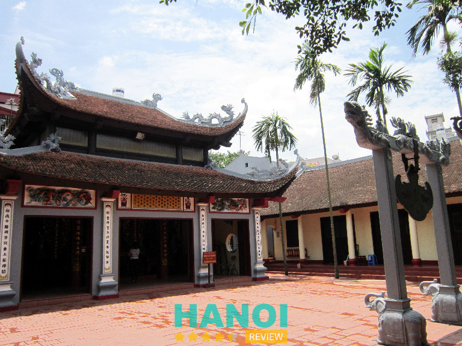
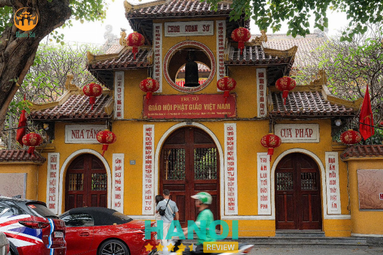
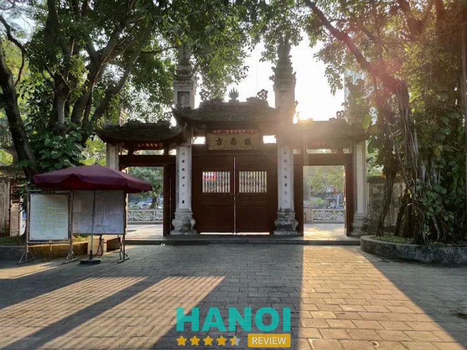

8 Chùa xin xăm ở Hà Nội nổi tiếng, mang lại may mắn, an lành
Chùa chiền Hà Nội không chỉ là nơi linh thiêng, cổ kính mà còn là điểm đến tâm linh thu hút du khách thập phương. Hòa mình vào không gian thanh tịnh, bạn sẽ tìm thấy sự bình yên và những trải nghiệm thú vị như tìm đến chùa xin xăm ở Hà Nội để khám phá những bí ẩn về tương lai. Liệu bạn có muốn biết ngôi chùa nào linh thiêng nhất cho việc này?
Top 8 Chùa xin xăm ở Hà Nội được du khách tin tưởng nhất
Các chùa xin xăm ở Hà Nội mang đến không gian linh thiêng, giúp bạn cầu bình an và định hướng cuộc sống. Đây là những địa điểm được nhiều người đánh giá cao, đáng ghé thăm.
Phủ Tây Hồ – Tây Hồ
- Giờ mở cửa: 5:00 – 18:00
Phủ Tây Hồ là một trong những địa điểm tâm linh nổi tiếng bậc nhất thủ đô, nằm trên bán đảo lớn nhô ra giữa Hồ Tây. Với không gian thanh bình, thoáng đãng cùng kiến trúc cổ kính, nơi đây đã trở thành điểm đến quen thuộc của người dân và du khách. Phủ Tây Hồ không chỉ là địa điểm du lịch văn hóa – tâm linh mà còn được biết đến là nơi xin xăm linh nghiệm tại Hà Nội, thu hút đông đảo tín đồ và khách thập phương đến cầu may mắn, tài lộc, tình duyên.

Phủ được xây dựng để thờ Bà chúa Liễu Hạnh – một trong Tứ bất tử của tín ngưỡng dân gian Việt Nam. Không gian kiến trúc vừa cổ kính, vừa uy nghiêm kết hợp với khung cảnh Hồ Tây thơ mộng tạo nên một địa điểm vừa linh thiêng vừa thư thái. Vào những ngày lễ lớn, mùng 1 hay ngày rằm hàng tháng, Phủ Tây Hồ trở thành nơi hành hương sôi động, minh chứng cho niềm tin tâm linh sâu sắc của người dân.
Các hoạt động tâm linh chính tại Phủ Tây Hồ:
- Lễ bái cầu phúc, mong an khang thịnh vượng
- Cầu duyên, mong đường tình cảm thuận lợi
- Xin lộc đầu năm để khởi sự may mắn
- Tham gia nghi thức lễ hội truyền thống gắn với Bà chúa Liễu Hạnh
- Tìm không gian tĩnh lặng để thiền định, thả hồn vào cảnh sắc Hồ Tây
Với sự linh thiêng và giá trị văn hóa – lịch sử đặc biệt, Phủ Tây Hồ là điểm đến tâm linh không thể bỏ qua tại Hà Nội. Nếu bạn muốn trải nghiệm một không gian thanh tịnh, cầu phúc lộc an khang và khám phá tín ngưỡng dân gian Việt, Phủ Tây Hồ chính là lựa chọn lý tưởng.
Thông tin liên hệ:
- Địa chỉ: Đường Thanh Niên, Quảng An, Tây Hồ, Hà Nội
Chùa Hương – Mỹ Đức
Chùa Hương không chỉ là danh thắng nổi tiếng bậc nhất Hà Nội mà còn là một trung tâm tín ngưỡng linh thiêng, nơi người dân và du khách tìm đến để cầu an, cầu lộc và xin xăm. Với lịch sử lâu đời, cảnh sắc hữu tình cùng giá trị tâm linh sâu sắc, Chùa Hương đã trở thành điểm đến quen thuộc của hàng triệu Phật tử và khách thập phương.
Đặc biệt, nghi thức xin xăm tại Chùa Hương được coi là một nét đẹp văn hóa tâm linh độc đáo, thu hút đông đảo du khách mỗi dịp lễ hội. Chính vì vậy, nơi đây được nhiều người ví như một “ngôi chùa xin xăm ở Hà Nội” nổi bật và đáng trải nghiệm nhất.
Du khách thường thực hiện nghi lễ xin xăm ở chùa Thiên Trù hoặc động Hương Tích. Trước khi xin xăm, mọi người thắp hương, dâng lễ và khấn nguyện thành tâm. Sau đó, ống tre chứa thẻ xăm được lắc cho đến khi một thẻ rơi ra, mang theo con số gắn liền với lời giải đoán.
Trải nghiệm đặc sắc tại Chùa Hương:
- Xin xăm và giải đoán quẻ
- Tham quan chùa Thiên Trù, động Hương Tích
- Dâng hương, cầu bình an, cầu lộc
- Ngắm cảnh sông suối, núi non hữu tình
Chùa Hương không chỉ là điểm đến du lịch tâm linh nổi tiếng mà còn là một ngôi chùa xin xăm ở Hà Nội đầy linh thiêng. Đây là nơi mang lại sự tĩnh tâm và niềm tin, giúp mỗi người tìm thấy sự bình an trong tâm hồn.
Thông tin liên hệ:
- Địa chỉ: Hương Sơn, Mỹ Đức, Hà Nội
Chùa Trấn Quốc – Tây Hồ
- Giờ mở cửa: 07:30–11:00 | 13:30–17:00 (đêm Giao thừa mở cửa xuyên đêm)
Chùa Trấn Quốc là một trong những chùa cổ ở Hà Nội nổi tiếng linh thiêng, tọa lạc trên hòn đảo nhỏ phía Đông Hồ Tây và nối với đường Thanh Niên. Được xây dựng từ thế kỷ VI, ngôi chùa đã trải qua hơn 1.500 năm lịch sử, nhiều lần di dời và đổi tên từ Khai Quốc, An Quốc cho đến Trấn Quốc ngày nay. Với vị thế lâu đời, không gian thanh tịnh và kiến trúc Phật giáo đặc trưng, chùa Trấn Quốc được xem là điểm đến tâm linh và du lịch không thể bỏ qua khi đến Hà Nội.
Hoạt động tại chùa Trấn Quốc:
- Lễ Phật, thắp hương cầu an, cầu sức khỏe, cầu bình an cho gia đình.
- Tham gia các ngày lễ lớn như Lễ Phật Đản, Vu Lan, Rằm tháng Giêng, Rằm tháng Bảy.
- Xin lộc, cầu duyên, cầu tài lộc.
- Tham quan, chiêm bái kiến trúc cổ, khám phá lịch sử chùa hơn 1.500 năm.
- Tham dự các buổi giảng pháp, khóa lễ tụng kinh.
- Chụp ảnh, vãn cảnh chùa bên Hồ Tây.
Chùa nổi bật với Bảo tháp Lục độ đài sen 11 tầng, cao 15m, mỗi tầng đều có tượng Phật A Di Đà bằng đá quý, mang lại vẻ đẹp uy nghiêm và thanh tịnh. Khuôn viên chùa rộng rãi, thoáng đãng, kết hợp hài hòa giữa hồ nước và cây xanh, tạo nên cảnh quan yên bình giữa lòng thủ đô. Không chỉ là nơi thờ tự, chùa Trấn Quốc còn là minh chứng sống động của lịch sử, văn hóa và kiến trúc Việt Nam.
Hoạt động và dịch vụ tại chùa:
- Tham quan, chiêm bái, cầu bình an
- Tham gia lễ Phật, dâng hương
- Chụp ảnh, khám phá kiến trúc cổ kính
- Tham dự các lễ hội, đặc biệt đêm Giao thừa mở cửa xuyên đêm
- Học hỏi về lịch sử và Phật giáo
Với bề dày lịch sử và không gian linh thiêng, chùa Trấn Quốc – chùa cổ ở Hà Nội là điểm đến lý tưởng để du khách tìm về sự an yên, chiêm ngưỡng kiến trúc độc đáo và cảm nhận giá trị văn hóa lâu đời. Đây chắc chắn là một địa điểm không thể thiếu trong hành trình khám phá thủ đô.
Thông tin liên hệ:
- Địa chỉ: Số 46 Thanh Niên, Yên Phụ, Tây Hồ, Hà Nội
Chùa Phúc Khánh – Đống Đa
- Thời gian mở cửa: 06:00 – 18:00
Chùa Phúc Khánh, hay còn gọi là chùa Sở hoặc chùa Thịnh Quang, là một trong những ngôi chùa linh thiêng và nổi tiếng bậc nhất tại Hà Nội. Nằm tại số 382 phố Tây Sơn, phường Thịnh Quang, quận Đống Đa, ngôi chùa không chỉ mang giá trị lịch sử lâu đời mà còn là điểm đến tâm linh uy tín, thu hút đông đảo phật tử và du khách.
Với bề dày lịch sử từ thời Hậu Lê, trải qua nhiều biến cố thăng trầm, chùa Phúc Khánh đã được phục dựng lại vào năm 1950 và trở thành nơi gửi gắm niềm tin, cầu phúc, cầu an của người dân. Nói đến chùa linh thiêng, nhiều người không thể bỏ qua chùa xin xăm nổi tiếng ở quận Đống Đa Hà Nội này.
Chùa Phúc Khánh được biết đến như “ngôi chùa cầu an” của người dân Thủ đô. Vào mỗi dịp Tết, rằm tháng Giêng hay lễ Vu Lan, chùa thu hút hàng vạn phật tử đến dâng hương, tụng kinh, cầu bình an và tài lộc. Nhiều người còn tin rằng việc xin xăm tại chùa rất linh ứng, mang lại niềm tin và định hướng trong cuộc sống.
Đặc biệt, không gian chùa trang nghiêm, cổ kính nhưng vẫn gần gũi, giúp cho người đến lễ bái cảm thấy thanh tịnh và an yên.
Các hoạt động chính tại chùa:
- Lễ cầu an, cầu siêu vào các ngày lễ lớn.
- Nghi thức xin xăm, cầu tài lộc, bình an.
- Các khóa lễ tụng kinh hằng tháng.
- Hoạt động thiện nguyện, từ bi cứu khổ.
Chùa Phúc Khánh không chỉ là một ngôi chùa cổ kính mà còn là điểm đến tâm linh tin cậy, được nhiều người lựa chọn khi muốn cầu an, cầu phúc cho gia đình. Nếu bạn đang tìm kiếm chùa xin xăm linh thiêng ở quận Đống Đa Hà Nội, chùa Phúc Khánh chắc chắn là địa điểm không thể bỏ lỡ.
Thông tin liên hệ:
- Địa chỉ: Số 382, phố Tây Sơn, phường Thịnh Quang, quận Đống Đa, Hà Nội
- Điện thoại: 024 3853 8377
- Email: tapchikhuongviet@gmail.com
- Website: khuongviet.com.vn
- Facebook: fb.com/ToDinhPK
Chùa Hà – Cầu Giấy
- Thời gian mở cửa: 08:00 – 18:00
Chùa Hà, tên chữ là Thánh Đức Tự, là một trong những chùa xin xăm ở Hà Nội nổi tiếng linh thiêng. Ngôi cổ tự này nằm ngay trên phố Chùa Hà, thuộc quận Cầu Giấy, thuận tiện cho phật tử và du khách gần xa đến chiêm bái.
Chùa Hà từ lâu đã được xem là địa điểm cầu duyên, cầu tài lộc, công danh vô cùng linh nghiệm. Với không gian cổ kính, thanh tịnh cùng bề dày lịch sử, đây là một trong những chùa linh thiêng ở Hà Nội thu hút đông đảo người dân, đặc biệt là giới trẻ.
Điểm nổi bật nhất khi đến Chùa Hà chính là nghi thức xin xăm truyền thống. Sau khi thắp hương và khấn nguyện, phật tử có thể xin một quẻ xăm tại các ban thờ. Mỗi quẻ xăm đều ẩn chứa thông điệp riêng, thường được sư thầy hoặc người trông chùa giải nghĩa rõ ràng.
Nhiều người tin rằng lời chỉ dẫn từ quẻ xăm giúp soi sáng con đường tình duyên, công việc hay sự nghiệp phía trước. Chính vì vậy, Chùa Hà được nhiều người nhắc đến như là ngôi chùa xin xăm linh nghiệm bậc nhất Hà Nội.
Hoạt động và trải nghiệm tại Chùa Hà:
- Cầu duyên, cầu tình duyên may mắn.
- Dâng lễ, thắp hương (lễ chay: hoa, quả, bánh kẹo…).
- Tham quan kiến trúc, chiêm bái tượng Phật.
- Tham gia lễ hội (tháng Giêng, tháng 2, tháng 8 âm lịch).
- Vãn cảnh, ngồi tĩnh tâm, nghe chuông chùa.
Với những giá trị tâm linh và sự linh ứng đã được nhiều người kiểm chứng, Chùa Hà thực sự là một chùa xin xăm ở Hà Nội không thể bỏ qua. Nếu bạn đang tìm nơi cầu duyên, cầu an hoặc mong muốn sự bình an trong tâm hồn, hãy đến Chùa Hà để cảm nhận sự tĩnh tại và linh thiêng nơi đây.
Thông tin liên hệ:
- Địa chỉ: 86 Phố Chùa Hà, Quận Cầu Giấy, Hà Nội
Chùa Quán Sứ – Hoàn Kiếm
- Thời gian mở cửa: 07:30–11:30 | 13:30–17:30
Chùa Quán Sứ là một trong những ngôi chùa xin xăm ở Hà Nội nổi tiếng và linh thiêng bậc nhất. Nằm ngay trung tâm thủ đô, tại số 73 phố Quán Sứ, quận Hoàn Kiếm, ngôi chùa không chỉ mang ý nghĩa tâm linh sâu sắc mà còn là trụ sở của Giáo hội Phật giáo Việt Nam. Với lịch sử lâu đời từ thế kỷ XV, Quán Sứ là điểm đến quen thuộc cho người dân và du khách trong và ngoài nước khi tìm về chốn thanh tịnh để lễ Phật, cầu an và xin quẻ.

Chùa được xây dựng từ thời nhà Lê, ban đầu dùng để tiếp đón sứ thần các nước. Qua nhiều lần trùng tu, nổi bật nhất vào năm 1934, ngôi chùa mang vẻ đẹp kết hợp giữa kiến trúc truyền thống Phật giáo Việt Nam với nét tinh tế của Trung Quốc và Nhật Bản. Không gian thanh tịnh với khu vườn xanh mát cùng chính điện uy nghiêm đã tạo nên sự linh thiêng, trang trọng.
Một trong những hoạt động thu hút đông đảo Phật tử và du khách là xin xăm. Đây là nét văn hóa tâm linh truyền thống, nơi mỗi quẻ xăm mang lời khuyên, sự động viên và dự báo cho tương lai. Nghi thức xin xăm tại chùa được thực hiện trang nghiêm, giúp người cầu khấn thêm vững niềm tin, tìm được sự bình an trong tâm hồn.
Các hoạt động chính tại chùa:
- Thực hiện nghi lễ xin xăm để cầu tài lộc, tình duyên và sự bình an.
- Dâng hương, lễ bái tôn kính Bà Chúa Liễu Hạnh – một trong Tứ bất tử của tín ngưỡng dân gian Việt Nam.
- Tham gia các nghi lễ cầu lộc, đặc biệt nhộn nhịp vào dịp Tết Nguyên Đán và các ngày hội lớn.
- Trải nghiệm không gian kiến trúc cổ kính, đồng thời tìm hiểu giá trị văn hóa – tín ngưỡng lâu đời.
Chùa Quán Sứ không chỉ là một chùa xin xăm ở Hà Nội nổi tiếng mà còn là điểm đến tâm linh mang lại sự an yên cho mọi người. Nếu bạn muốn tìm một nơi gửi gắm niềm tin và hy vọng, Quán Sứ chính là lựa chọn không thể bỏ qua.
Thông tin liên hệ:
- Địa chỉ: 73 Quán Sứ, Trần Hưng Đạo, Hoàn Kiếm, Hà Nội
- Điện thoại: 024 3942 2427
- Email: info@chuaquansu.org
- Facebook: fb.com/chuaquansu.73quansu
Đền Cổ Loa – Đông Anh
- Thời gian mở cửa: 07:30 – 11:30 | 13:30 – 17:30
Đền Cổ Loa là một điểm đến tâm linh nổi tiếng, nằm trong quần thể di tích Cổ Loa, huyện Đông Anh, Hà Nội. Với vị trí đặc biệt gắn liền với thành Cổ Loa, nơi vua An Dương Vương dựng nên kinh đô, ngôi đền không chỉ mang giá trị lịch sử, mà còn là chốn linh thiêng được nhiều du khách tìm đến để cầu an, cầu tài và xin quẻ xăm.
Là một trong những điểm du lịch văn hóa tâm linh uy tín, Đền Cổ Loa luôn giữ vững sức hút nhờ không gian cổ kính, thanh tịnh và những nghi thức tín ngưỡng đặc sắc.
Đền thờ An Dương Vương mang đậm nét kiến trúc cổ truyền với cổng Tam quan uy nghiêm, mái ngói rêu phong và những bức tượng điêu khắc tinh xảo. Không gian thanh bình, cây cổ thụ xanh mát cùng những nghi thức lễ bái đã tạo nên sự trang nghiêm hiếm có.
Đặc biệt, tục xin xăm tại đây từ lâu được coi là điểm nhấn độc đáo, giúp người dân và du khách tìm lời chỉ dẫn, niềm tin và định hướng trong cuộc sống.
Các hoạt động chính tại Đền Cổ Loa:
- Dâng hương, lễ bái tưởng nhớ An Dương Vương
- Xin quẻ xăm cầu tài, cầu duyên, cầu bình an
- Tham quan, tìm hiểu kiến trúc cổ kính và giá trị lịch sử
- Tham gia lễ hội truyền thống tại Cổ Loa
Đền Cổ Loa không chỉ là nơi lưu giữ ký ức lịch sử mà còn là điểm đến lý tưởng để tìm về sự an yên trong tâm hồn. Nếu bạn đang tìm một địa điểm tâm linh uy tín ở Hà Nội, Đền Cổ Loa chính là lựa chọn không thể bỏ qua.
Thông tin liên hệ:
- Địa chỉ: Thôn Chùa, Đông Anh, Hà Nội
- Điện thoại: 024 3961 1354
Đền Kim Liên – Đống Đa
- Thời gian mở cửa: 08:00 – 11:00 | 14:00 – 17:00
Nằm uy nghiêm giữa lòng thủ đô, Đền Kim Liên được biết đến là một trong Tứ Trấn Thăng Long linh thiêng bậc nhất. Đây không chỉ là điểm đến tâm linh nổi tiếng mà còn là nơi nhiều người dân và du khách lựa chọn để xin xăm cầu tài, cầu lộc, cầu bình an.
Với lịch sử lâu đời cùng không gian linh thiêng, Đền Kim Liên đã trở thành địa chỉ uy tín cho những ai mong muốn tìm sự an yên, niềm tin và định hướng trong cuộc sống.

Khi đến Đền Kim Liên, bạn sẽ được trải nghiệm dịch vụ xin xăm linh thiêng ở Hà Nội theo quy trình trang trọng và ý nghĩa. Trước tiên, khách hành hương sẽ dâng hương, khấn vái thành tâm trước ban thờ các vị thần. Sau đó, bạn tiến hành xin quẻ bằng cách lắc ống xăm, chọn ra một thẻ tre đánh số, rồi mang đến phòng giải quẻ để được thầy hoặc người am hiểu giúp luận giải chi tiết.
Các hoạt động tại Đền Kim Liên:
- Nghi lễ tâm linh: dâng hương, lễ bái, cầu an, cầu lộc.
- Xin xăm & giải quẻ: lắc xăm, rút thẻ, nghe thầy giải nghĩa.
- Tham quan kiến trúc cổ: cổng tam quan, hoành phi câu đối, họa tiết rồng phượng.
- Tìm hiểu lịch sử – văn hóa: vai trò Đền Kim Liên trong Tứ Trấn Thăng Long.
- Tham dự lễ hội truyền thống: đặc biệt là dịp đầu xuân, thu hút đông đảo du khách.
- Hoạt động cộng đồng: lễ cầu quốc thái dân an, sự kiện văn hóa tâm linh.
Với sự linh thiêng và đội ngũ thầy giải quẻ tận tâm, dịch vụ xin xăm tại Đền Kim Liên Hà Nội đã trở thành điểm tựa tinh thần vững chắc cho nhiều người. Đây vừa là hành trình tâm linh, vừa là cách để kết nối với văn hóa truyền thống. Nếu bạn đang tìm một nơi gửi gắm niềm tin, Đền Kim Liên chính là lựa chọn hoàn hảo.
Thông tin liên hệ:
- Địa chỉ: Phương Liên, Đống Đa, Hà Nội
Tiêu chí chọn chùa xin xăm chính xác ở Hà Nội
Chọn được chùa xin xăm ở Hà Nội phù hợp giúp bạn trải nghiệm yên tâm, nhận lời khuyên tâm linh chính xác, mang lại may mắn lâu dài.
- Uy tín lâu năm: Chọn chùa có lịch sử lâu đời, được nhiều người tin tưởng. Thường những chùa này có các sư thầy am hiểu về tín ngưỡng. Ví dụ: Chùa Hà, Phủ Tây Hồ.
- Không gian linh thiêng: Bầu không khí thanh tịnh, yên tĩnh giúp bạn tập trung, tâm hồn thanh thản, nhận được lời xăm đúng ý.
- Người coi sóc có tâm: Sư thầy hoặc người coi sóc nên nhiệt tình, am hiểu để giải thích quẻ xăm. Họ sẽ đưa ra lời khuyên hữu ích, không chỉ giải đáp một cách máy móc.
- Vị trí thuận tiện: Chùa nằm tại trung tâm hoặc dễ tìm kiếm, thuận tiện di chuyển cho mọi người trong thành phố.
- Hỗ trợ du khách: Chùa có người hướng dẫn tận tình, giúp du khách lễ bái đúng nghi thức, không lo nhầm lẫn.
- Được đánh giá cao: Chùa thường nhận phản hồi tích cực từ nhiều người ghé thăm, cho thấy sự tin tưởng và hài lòng.
- Gắn với văn hóa: Chùa thể hiện nét văn hóa tâm linh đặc trưng, giúp du khách hiểu rõ hơn truyền thống địa phương.
- Cảm nhận cá nhân: Hãy lắng nghe trực giác của bạn. Nếu bạn cảm thấy kết nối và tin tưởng một ngôi chùa nào đó, quẻ xăm ở đó sẽ linh nghiệm hơn.
Trải nghiệm chùa xin xăm ở Hà Nội giúp bạn tìm kiếm may mắn, bình an, và học hỏi nhiều giá trị văn hóa tâm linh quý báu. Đừng ngần ngại ghé thăm để cảm nhận sự thanh tịnh và mang về niềm tin tích cực cho cuộc sống hàng ngày.
Có thể bạn quan tâm
- Nhà thờ Lớn Hà Nội: lịch sử, kiến trúc, 1 biểu tượng vững chắc
- Chùa Hà – Ngôi chùa cầu duyên linh nghiệm bậc nhất tại Hà Nội
- Ô Quan Chưởng – Cửa Ô lịch sử giữa dòng chảy hiện đại
- Khám phá Hoàng Thành Thăng Long: Di sản văn hoá và lịch sử của Việt Nam
DOANH NGHIỆP: Đăng tải thông tin MIỄN PHÍ.
Tin đọc nhiều


5 Phòng tập gym ở Hoàn Kiếm chất lượng, tiện nghi đầy đủ
Bạn đang tìm kiếm phòng tập gym ở Hoàn Kiếm chất lượng, tiện nghi và giúp cải thiện sức khỏe toàn diện? Những địa điểm...

10 Phòng Gym ở Cầu Giấy chất lượng không gian tập tốt nhất
Nếu bạn đang tìm kiếm phòng Gym ở Cầu Giấy để cải thiện vóc dáng, nâng cao sức khỏe và duy trì lối sống tích...

9 Phòng gym ở Ba Đình giúp nâng cao sức khỏe và vóc dáng
Việc lựa chọn phòng gym ở Ba Đình chất lượng không chỉ giúp nâng cao sức khỏe mà còn cải thiện vóc dáng, tăng cường...

10 Địa chỉ tiêm trị sẹo ở Hà Nội uy tín, giúp tự tin hơn
Nếu bạn đang tìm kiếm địa chỉ tiêm trị sẹo ở Hà Nội uy tín, an toàn và hiệu quả, đây chính là lựa chọn...

Trở thành người đầu tiên bình luận cho bài viết này!